Dang Nha Nguyen
Hi! I'm Dang Nha Nguyen, a Computer Science graduate from Vietnam-Korea University of Information and Communication Technology (VKU), Vietnam.
My research interests focus on robotics, embodied AI, and multimodal learning. I am particularly interested in building intelligent robotic systems that can perceive, reason, and interact with complex real-world environments through vision-language-action models and representation learning.
Currently serving as a Teaching Assistant at AI Vietnam under the supervision of Dr. Quang Vinh Dinh. My research at AI Vietnam on time-series augmentation for long-term forecasting was accepted at the AAAI 2025 Workshop on AI for Time Series (AI4TS), in collaboration with Khoa Tho Anh Nguyen. Prior work includes metaheuristic optimization under the supervision of Prof. Sunarin Chanta and Prof. Ornurai Sangsawang at KMUTNB, Thailand, published in the Journal of Industrial and Engineering Management (JIEM, Q2). I also served as a research assistant with Dr. Nguyen Trinh Trung Duong on a drug repurposing project using graph neural networks and knowledge graphs.
Selected Publications
IMA: An Imputation-based Mixup Augmentation Using SSL for Time Series Data
AAAI 2025 Workshop on AI for Time Series (AI4TS) — Accepted
Proposes IMA, a novel data augmentation method for long-term time series forecasting that combines imputation-based mixup with self-supervised learning to generate diverse and realistic synthetic training samples.
Metaheuristics for Multi-Objective Hub Location Problem
Journal of Industrial Engineering and Management — Accepted
Introduces a novel Tabu Search metaheuristic approach for solving multi-objective hub location problems, addressing congestion management and transit point service optimization in hub-and-spoke networks.
Experience
- Supervised by Dr. Quang Vinh Dinh
- Teaching Assistant for AIO2024 & AIO2025 courses: lesson design, documentation, code implementation, slides, and presentations
- Team leader of Computer Vision research group (8 members), established Dec 2024
Research Assistant
Dept. of Drug Design and Pharmacology, University of Copenhagen · Remote
- Collaborated with Dr. Nguyen Trinh Trung Duong
- Drug Repurposing via GNNs — integrated knowledge graphs and deep learning to identify alternative therapeutic uses for existing drugs
International Research Internship
KMUTNB · Bangkok, Thailand
- Supervised by Prof. Sunarin Chanta and Prof. Ornurai Sangsawang
- Analyzed optimal urban rail travel patterns for congestion reduction, using case studies from the French railway system
- Proposed a novel Tabu Search algorithm for multi-objective optimization problems
Research Internship
Danang International Institute of Technology (DNIIT) · On-site
- DoNaAI Project — AI system for waste classification
- Conducted literature review and studied existing algorithms for image-based waste recognition
Teaching
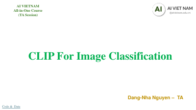
CLIP for Image Classification
Contrastive Language-Image Pretraining applied to image classification via vision-language alignment.
CLIP for Video Classification
Extending CLIP to video classification through temporal modeling and frame-level feature aggregation.
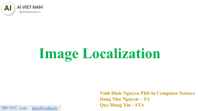
Image Localization
Object localization techniques covering bounding box regression and region proposal methods.
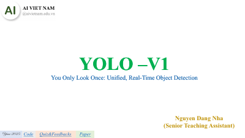
YOLOv1 Object Detection
YOLOv1 architecture for unified real-time detection with grid-based bounding box prediction.
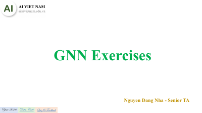
Graph Neural Networks
Hands-on exercises covering message passing, node embeddings, and graph classification with GNNs.
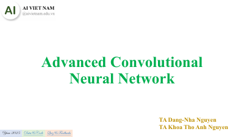
Advanced CNN
Advanced CNN architectures including residual connections and modern convolutional designs.
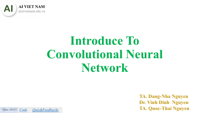
Introduction to CNN
Foundations of Convolutional Neural Networks: convolution, pooling, and basic architectures.
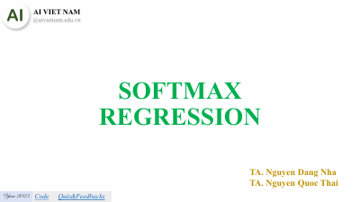
Softmax Regression
Softmax regression fundamentals for multi-class classification with probabilistic interpretation.
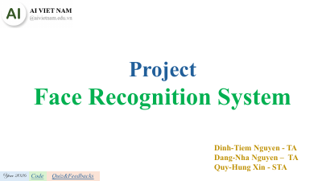
Face Recognition
Face recognition systems using Siamese networks, triplet loss, and one-shot learning.
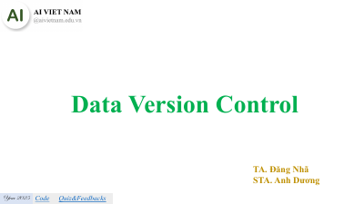
Data Version Control
Managing ML experiments and datasets with DVC for reproducible machine learning pipelines.
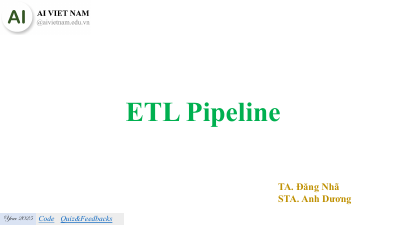
ETL Pipeline
Building robust ETL pipelines for data preprocessing and feature engineering in production.
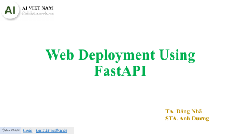
FastAPI Deployment
Deploying ML models as REST APIs with FastAPI from serialization to serving.
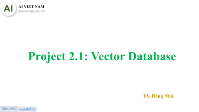
Vector Database
Vector databases for similarity search and embedding storage in modern ML applications.
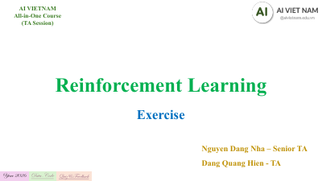
Reinforcement Learning
Reinforcement learning exercises covering Q-learning, policy gradients, and MDPs.
Recommendation System
Recommendation systems using collaborative filtering, matrix factorization, and content-based methods.
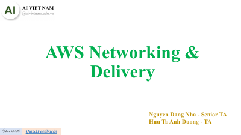
AWS Networking & Delivery
AWS networking fundamentals: VPC, CloudFront CDN, and content delivery architectures.
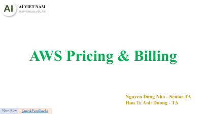
AWS Pricing & Billing
AWS pricing models and billing management for cloud cost optimization.
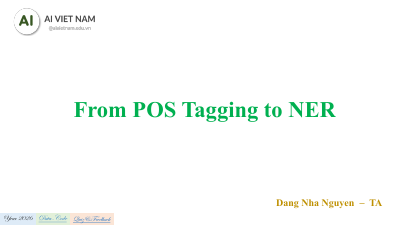
Introduction to NER
Named Entity Recognition with sequence labeling, CRFs, and transformer-based approaches.